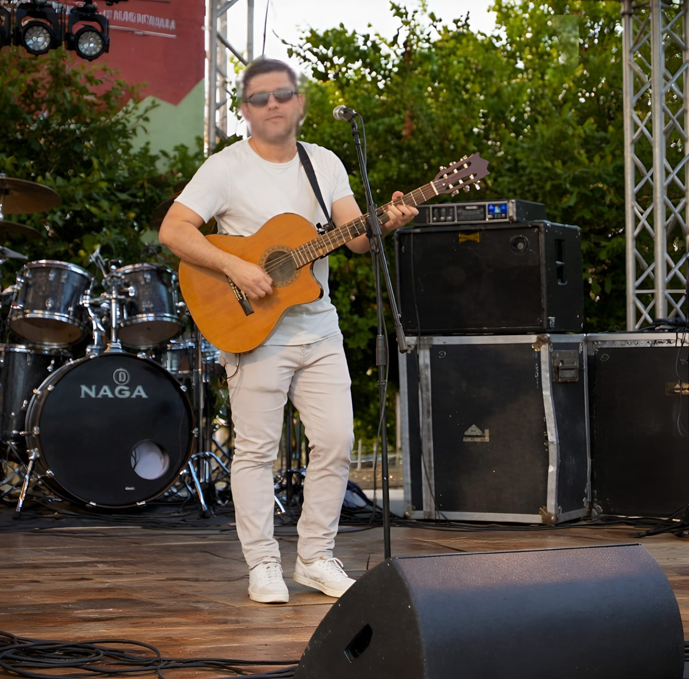
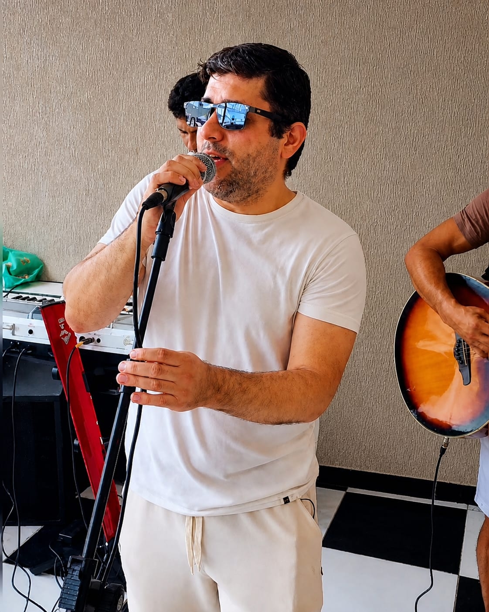
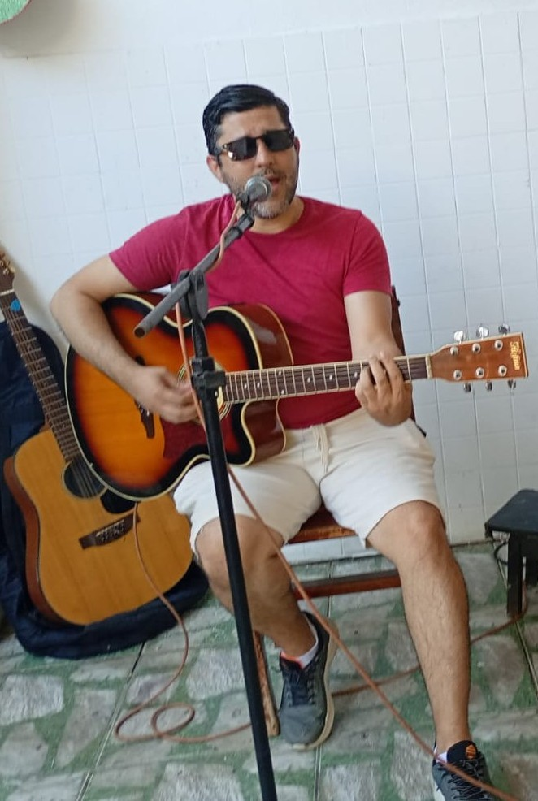
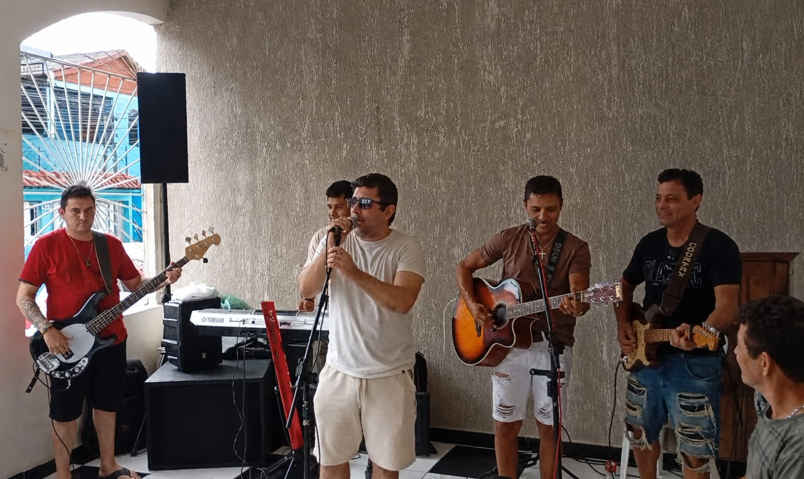
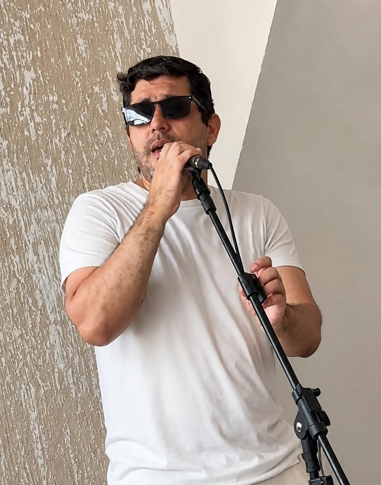

Descrição da imagem
Diego Nascimento nasceu em um ambiente profundamente marcado pela música. Vindo de uma família de músicos, teve suas primeiras influências ainda na infância, herdando a sensibilidade artística de seu avô, Joaquim Nascimento, violonista reconhecido por tocar no estilo “baixaria” e compositor intuitivo.
Mesmo sem saber ler ou escrever, seu avô criava composições que eram registradas por Diego, ainda muito jovem, estabelecendo ali um vínculo precoce com a música autoral e o processo criativo. Essa convivência não apenas despertou seu interesse musical, mas também moldou sua percepção artística desde cedo.
A influência familiar se fortaleceu com seu pai, Marialvo Nascimento, músico completo — multi-instrumentista, cantor e produtor musical — que teve papel fundamental na formação de Diego, transmitindo conhecimento, prática e vivência musical no dia a dia.
Foi por meio de seu pai que, aos 8 anos de idade, teve seu primeiro contato com o teclado, instrumento que marcou o início de sua jornada musical. Desde então, Diego passou a desenvolver sua musicalidade com dedicação, sensibilidade e forte conexão emocional com a arte.
Essa base familiar sólida e imersa na música foi determinante para a construção de sua identidade artística, estabelecendo os primeiros pilares de uma trajetória que, mais tarde, ganharia reconhecimento em diferentes palcos e contextos culturais.
Diego Nascimento iniciou sua trajetória musical ainda na adolescência, em 2001, na Escola Estadual Marechal Hermes, onde formou sua primeira banda aos 13 anos. Seu primeiro reconhecimento veio por meio de um projeto cultural promovido pela Secretaria de Estado de Educação do Amazonas, com temática voltada à cidadania.
Nesse contexto, Diego destacou-se como compositor ao apresentar uma música autoral que foi selecionada entre diversas escolas da rede estadual, levando-o à fase final do concurso.
Como finalista, realizou uma apresentação oficial na sede da SEDUC-AM, diante do Secretário de Educação. O desempenho do grupo resultou na conquista de instrumentos musicais para a escola — incluindo bateria, teclado e guitarra — evidenciando o impacto direto de sua participação no incentivo à prática musical no ambiente escolar.
A projeção desse trabalho se estendeu para outros espaços culturais de relevância em Manaus. No SESC Amazonas, apresentou-se sob avaliação de um corpo de jurados qualificado, com destaque para a presença do renomado músico amazonense Seldo Braga.
Paralelamente, participou de um segundo concurso musical independente no Anfiteatro da Ponta Negra, ampliando sua experiência de palco e consolidando sua vivência artística desde cedo.
Essa fase inicial marca o surgimento de um artista com forte inclinação para a composição autoral, performance ao vivo e participação em projetos culturais.
Aos 13 anos, Diego Nascimento iniciou seus estudos no violão sob orientação do professor Onéias Maquiné. Demonstrando rápida assimilação e sensibilidade musical, em apenas uma semana de aulas já executava a canção Pais e Filhos, da Legião Urbana — um marco inicial que evidenciava seu talento e dedicação.
Aos 14 anos, aprofundou seus conhecimentos musicais ao ingressar no curso de canto coral no Centro de Artes Irmã Yolanda Setúbal, sob orientação do professor Beethoven Cabrinha. Nesse período, desenvolveu técnicas vocais, leitura de partituras e percepção musical, concluindo o curso com êxito, enquanto simultaneamente expandia sua prática no estúdio de seu pai — ambiente que contribuiu diretamente para sua formação prática e criativa.
Aos 15 anos, ingressou no Liceu de Artes e Ofícios Cláudio Santoro, onde deu continuidade à sua formação musical. Estudou violão clássico com Roberto Bopp, além de desenvolver habilidades em guitarra e bateria, ampliando significativamente seu domínio técnico e versatilidade artística.
Paralelamente, desenvolveu-se como autodidata no contrabaixo. Em uma época anterior à popularização da internet, Diego buscava conhecimento por meio de vídeos em fita cassete e revistas especializadas, estudando técnicas, grooves e fundamentos do instrumento de forma independente. Essa prática exigia disciplina, escuta atenta e repetição constante, fortalecendo sua autonomia musical e sua capacidade de aprendizado intuitivo.
Posteriormente, ingressou na Universidade Federal do Amazonas, onde cursou a Faculdade de Música por dois anos. Nesse período, aprofundou seus estudos em violão clássico sob orientação do professor Arcângelo, além de adquirir base em regência. Durante sua formação acadêmica, destacou-se em percepção musical entre músicos atuantes em importantes formações da cidade, como Orquestra Sinfônica, Orquestra de Violões e Big Band.
Dos 15 aos 19 anos, Diego Nascimento aprofundou sua formação prática no estúdio de seu pai, Marialvo Nascimento. Nesse ambiente, desenvolveu habilidades técnicas e artísticas que seriam fundamentais para sua carreira, atuando como técnico de som, produtor musical e instrumentista.
Durante esse período, ampliou sua versatilidade ao executar diversos instrumentos e participar ativamente de produções musicais, incluindo gravações e arranjos, além de atuar como backing vocal. Essa vivência intensa em estúdio consolidou sua compreensão prática da música, desde a execução até os processos de captação, edição e finalização sonora.
Aos 19 anos, recebeu um convite para atuar como Diretor Musical e regente de coral em um congresso estadual de uma denominação evangélica, realizado no Auditório da Prefeitura de Manaus. Nessa função, foi responsável pela condução musical e organização do coro, demonstrando liderança, sensibilidade artística e domínio técnico em um evento de grande porte.
Dos 19 aos 32 anos, empreendeu na área da educação musical, tornando-se proprietário de sua própria "Escola de Música Maestrinho". Nesse período, formou diversos alunos, ministrando aulas de violão, guitarra, contrabaixo, bateria, teclado, canto coral e teoria musical, consolidando sua atuação como educador e multiplicador de conhecimento.
Paralelamente, estruturou e administrou seu próprio home estúdio de gravação, onde produziu trabalhos musicais, realizou gravações e desenvolveu "Projetos Autorais Gospel" e de terceiros, unindo prática pedagógica e produção musical em sua rotina profissional.
A partir dessa fase, passou a atuar de forma consistente em apresentações ao vivo, construindo experiência de palco em diferentes contextos e formatos. Seu repertório versátil abrange estilos como MPB, Bossa Nova, Jazz, Rock, Country e Gospel, com performances realizadas em eventos como confraternizações, aniversários, casamentos e diversas ocasiões sociais.
Essa trajetória evidencia um artista completo, com sólida experiência em performance, produção, direção musical e formação de novos músicos, consolidando sua presença no cenário musical ao longo dos anos.
Atualmente, Diego Nascimento apresenta-se como um artista versátil e maduro, cuja trajetória reúne experiência prática, formação técnica e sensibilidade artística construída ao longo dos anos.
Sua identidade musical é marcada pela diversidade de estilos e pela capacidade de transitar com naturalidade entre diferentes linguagens sonoras. Em suas performances, interpreta repertórios em múltiplos idiomas — incluindo inglês, espanhol, francês e hebraico — ampliando sua conexão com públicos variados e reforçando sua versatilidade como intérprete.
Seu repertório dialoga com grandes referências da música internacional, como Frank Sinatra, Elvis Presley, The Beatles e Charles Trenet, entre outros nomes que influenciam sua interpretação, presença de palco e estética musical.
Além das apresentações ao vivo, Diego também se dedica à criação autoral, explorando a música como expressão sensível e artística. Um de seus projetos de destaque é a obra para piano "Melodias da Floresta", disponível online, onde desenvolve uma proposta sonora inspirada na natureza, na contemplação e na identidade amazônica.
Seu trabalho reflete não apenas domínio técnico, mas também propósito artístico: levar emoção, identidade e conexão por meio da música. Seja no palco, no ensino ou na produção, Diego Nascimento constrói uma trajetória que une tradição, versatilidade e autenticidade, consolidando-se como um artista completo e em constante evolução.
Descrição da imagem







